常见问题¶
使用建议
- 如果是挂载异常，优先看
1 ~ 5。 - 如果是 VSCode 编译或调试异常，优先看
6 ~ 7。 - 如果是布局、位图或数据持久化问题，优先看
8和12. 还是定位不到问题？常用调试方法。
1. 挂载后还想执行命令，如何再开一个终端？¶
按下 F5（或 Fn+F5）后，文件系统通常以前台模式运行。这时如果你还想执行 ls、mkdir、touch 等命令，就需要再开一个终端。
最直接的做法是：
- 按 `Ctrl+Shift+`` 新开一个终端；
- 或使用 VSCode 终端面板里的“拆分终端”按钮。
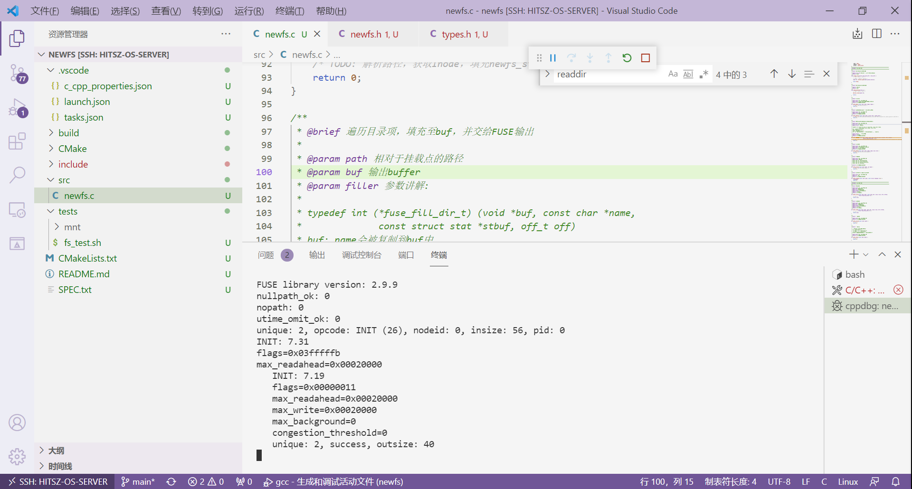
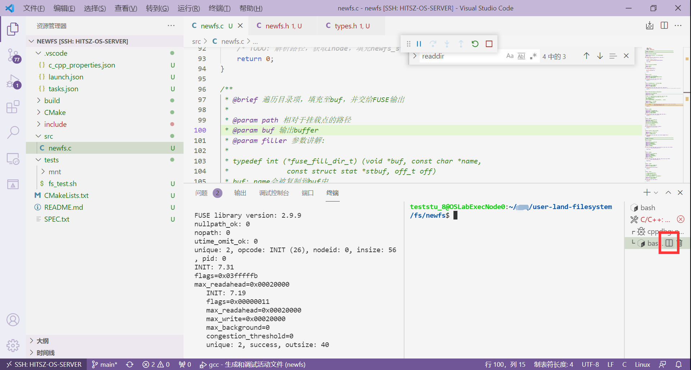
2. 报错：Transport endpoint is not connected¶
如果出现类似：
fuse: bad mount point ... Transport endpoint is not connected
常见原因是：上一次没有正常卸载，直接 Ctrl+C 或直接关闭 VSCode，导致挂载点状态异常。
处理方法：
fusermount -u ./tests/mnt
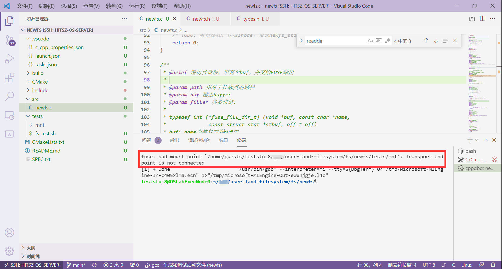
3. 报错：mountpoint is not empty¶
如果出现：
mountpoint is not empty
说明挂载目录下还有残留文件。最常见的情况是手动测试时不小心在 tests/mnt 下创建了文件，但卸载后没有清理。
处理方法：把 tests/mnt 恢复成空目录后再挂载。
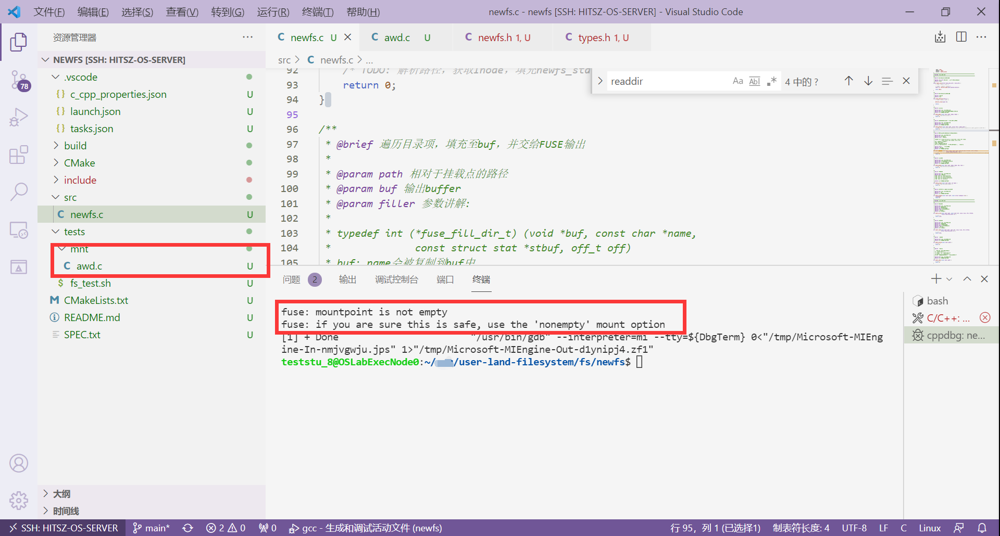
4. 报错：No such file or directory（挂载点不存在）¶
如果出现：
fuse: bad mount point ... No such file or directory
说明文件系统要挂载到的目录本身不存在。
处理方法：提前创建一个空目录，例如：
mkdir -p ./tests/mnt
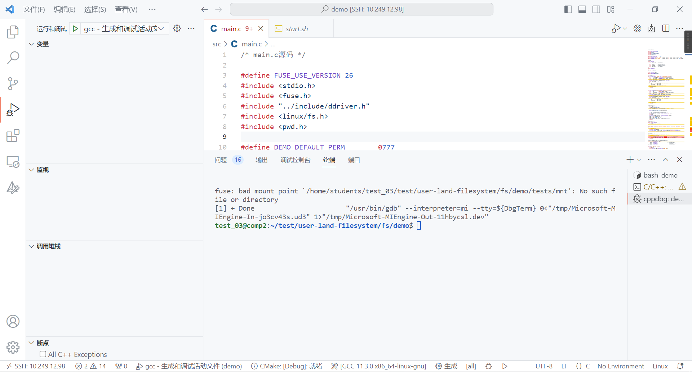
5. 报错：Device or resource busy¶
如果任务一测评时出现：
fusermount: failed to umount xxx : Device or resource busy
一种常见原因是实验包中的旧版测评脚本有问题。
处理方法：先用 git pull 更新实验包，再重新运行测评脚本。
6. VSCode 里 S_IFxxx 标红¶
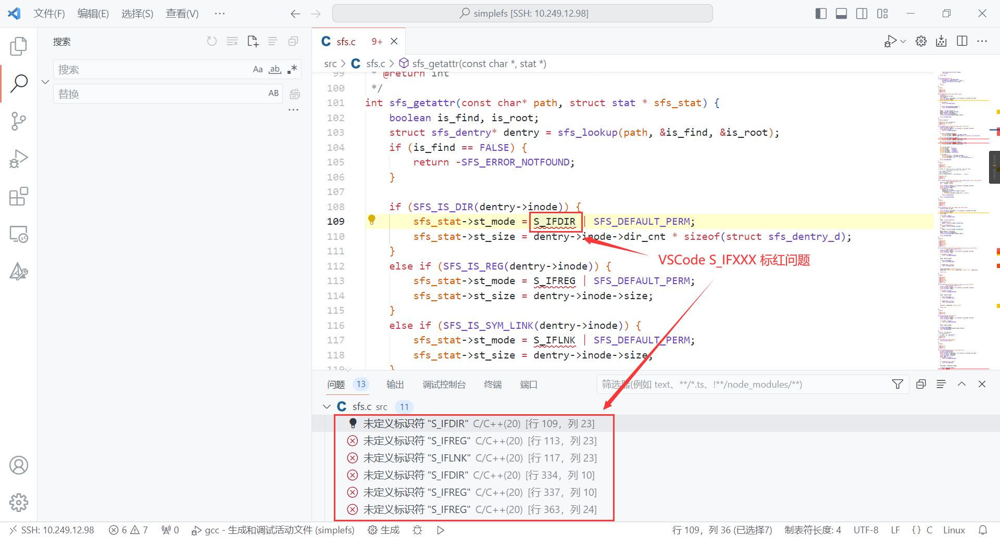
这类标红在任务一和任务二里都可能出现。它通常 不会影响编译和运行 ，所以如果项目本身能正常构建，可以先忽略。
如果你想消除这类标红，可以在相关源文件的 第一行 增加：
#define _XOPEN_SOURCE 700
参考说明如下：
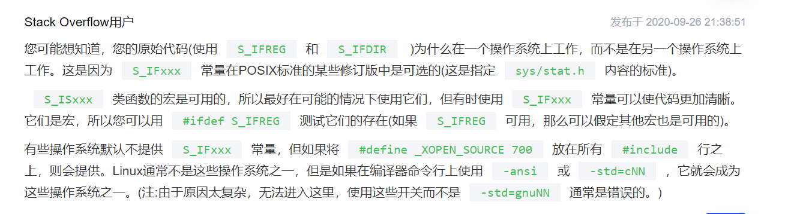
7. 按 F5 后编译或调试失败¶
7.1 报错：spawn /bin/bash ENOENT¶
如果 VSCode 里出现 spawn /bin/bash ENOENT 一类错误，通常说明工程还没有正确完成 CMake 配置。
处理方法：
- 按 项目编译 的步骤重新配置；
- 确认已经执行过
CMake: Select a Kit和CMake: Configure； - 确认工程目录下已经生成
build目录。
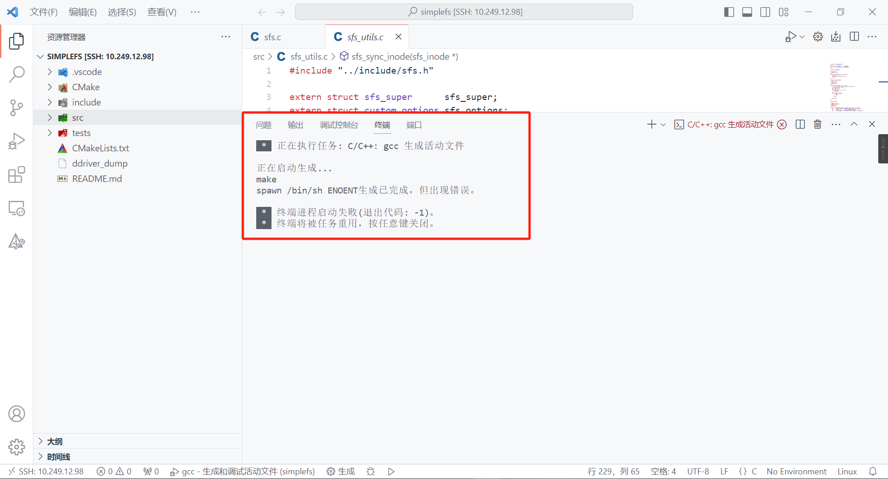
7.2 报错：#error Please add -D_FILE_OFFSET_BITS=64 ...¶
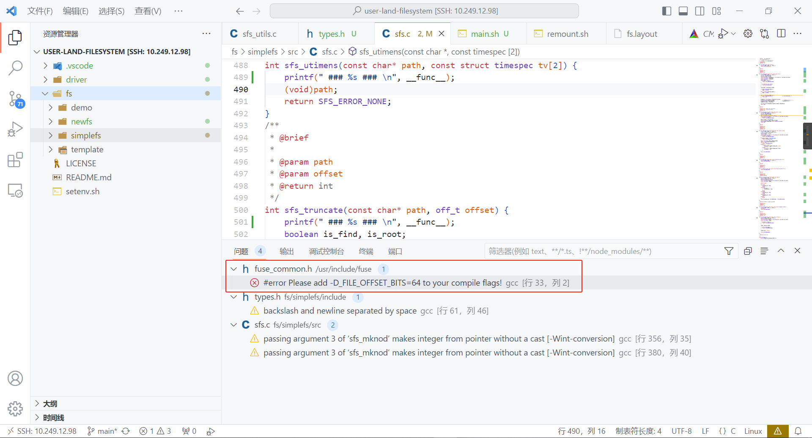
这个报错最常见的原因不是代码错，而是 VSCode 打开的目录不对 。
请检查：
- 做任务一时，打开的是
fs/demo； - 做任务二时，打开的是你自己的工程目录，例如
fs/newfs； - 如果只是查看参考实现，打开的是
fs/simplefs。
不要直接把 user-land-filesystem 根目录当成工程目录打开。
7.3 报错：multiple definition ... first defined here¶
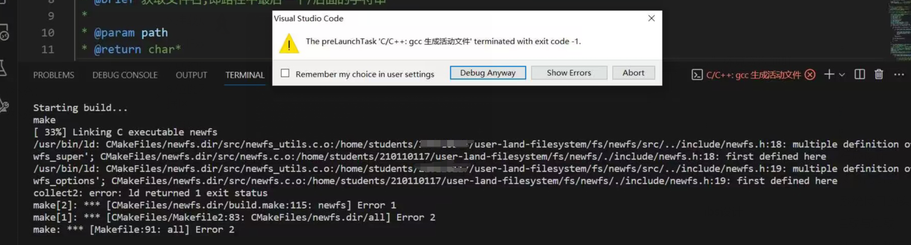
这个错误通常说明：你把全局变量定义在了多个 .c 文件里，而不是“定义一次，其他文件声明引用”。
更标准的做法是：
- 在一个
.c文件里真正定义全局变量； - 在需要使用它的其他文件里，用
extern声明。
以 simplefs 为例，可以参考下面几张图的做法：
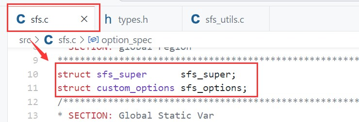
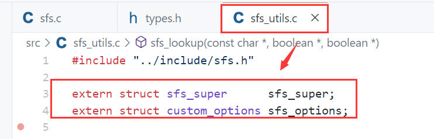
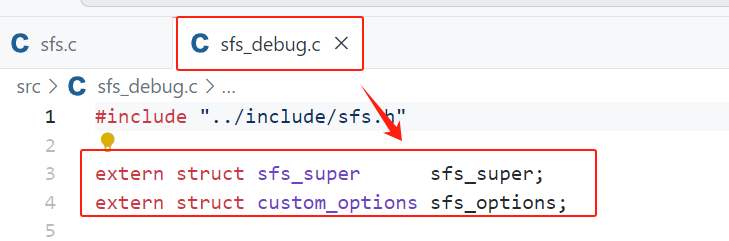
7.4 报错：找不到任务“C/C++: gcc生成活动文件”¶
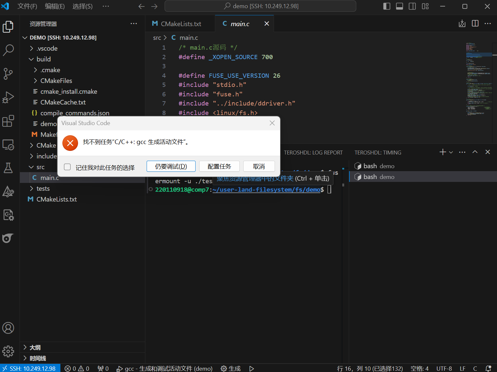
这通常和 VSCode 扩展安装或解析失败有关。
建议按下面顺序处理：
- 先确认
CMake、CMake Tools、C/C++三个扩展已经成功安装到远程环境； - 如果还是不行，可以先进入
build目录手动执行make； - 编译出可执行文件后，也可以直接手动输入
launch.json中的启动命令进行挂载测试。
例如任务一常见的启动命令是：
./build/demo -f -d -s tests/mnt
7.5 F5 成功编译了，但不能启动调试¶
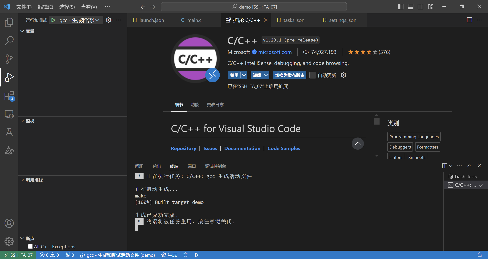
一个常见原因是 C/C++ 插件装成了预发布版本。
处理方法：切换回发布版本。

7.6 报错：Signature verification failed with 'UnknownError' error.¶
如果安装扩展时出现：
Signature verification failed with 'UnknownError' error.
可以尝试在 VSCode 的 settings.json 中加入：
{
"extensions.verifySignature": false
}
操作步骤：
- 按
Ctrl+Shift+P打开命令面板。 - 执行
Preferences: Open User Settings (JSON)。 - 在打开的
settings.json中加入上面的配置。
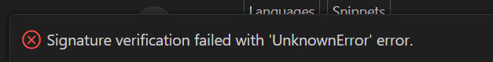
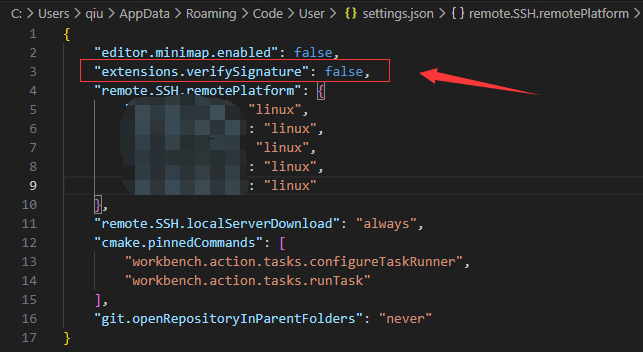
8. 位图检查失败，或数据区内容没有写回¶
如果测评脚本在 check bitmap 一类测试中失败，通常说明问题集中在：
- inode 位图；
- 数据块位图；
- 目录项或文件内容没有真正写回数据区。
8.1 inode 位图不对¶
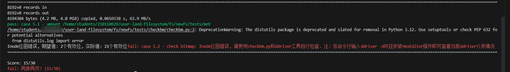
一个典型场景是：
- 清空磁盘；
- 重新挂载文件系统；
- 在根目录下创建一个文件。
这时通常应该至少有两个 inode 被占用：
- 根目录一个；
- 新文件一个。
如果你的 inode 位图有效位远多于预期，说明很可能在这些地方出错了：
- 初始化时把本不该置位的位提前设成了 1；
- 反复创建或重建 in-Mem 结构时重复更新了位图；
- 写回磁盘时偏移算错，覆盖到了错误位置。
8.2 数据块位图不对¶
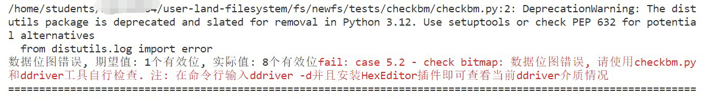
一个典型场景是：
- 清空磁盘；
- 重新挂载；
- 在根目录下创建一个空文件。
这时根目录通常需要数据块，而空文件本身通常不需要立刻分配数据块，所以有效数据块数不应该很多。
如果数据块位图有效位明显偏多，优先检查：
- 你是否实现了 按需分配 ；
- 是否在创建普通空文件时也预分配了数据块；
- 位图扫描和置位逻辑是否越界或重复执行。
参考 实验实现 3.1 实现内容 的要求，必做部分的数据块应按需分配。
8.3 目录项或文件内容没有写回数据区¶
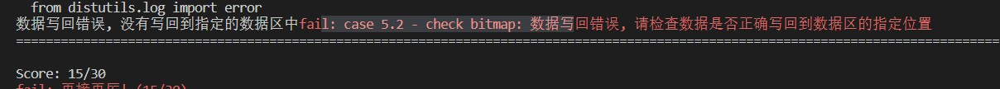
这类问题通常表现为：目录项已经创建了，但卸载后重新挂载时数据没了；或者测评脚本提示数据区内容和预期不一致。
最常见的检查点有两个：
- 父目录的
dentry_d数组是否真的写回到了目录对应的数据块； - 写回偏移是否按你的真实布局计算，而不是写错到了别的区域。
例如，如果根目录的数据块是某个固定逻辑块，那么那个逻辑块里就应该能看到根目录下所有子项对应的 dentry_d。
9. mkdir / touch 报错：Operation not permitted¶
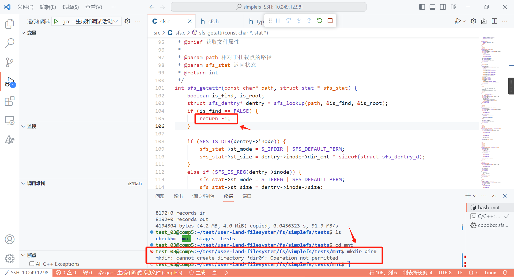
如果文件系统已经挂载成功，但执行 mkdir、touch 等命令时报：
Operation not permitted
一个常见原因是：你在某些钩子函数的异常路径里直接返回了 -1。
在 Linux 错误码里，-1 并不是“通用失败”占位，而往往会被解释成具体错误，例如 EPERM。
更稳妥的做法是根据具体失败原因返回正确的错误码，例如：
#define SFS_ERROR_NONE 0
#define SFS_ERROR_ACCESS EACCES
#define SFS_ERROR_SEEK ESPIPE
#define SFS_ERROR_ISDIR EISDIR
#define SFS_ERROR_NOSPACE ENOSPC
#define SFS_ERROR_EXISTS EEXIST
#define SFS_ERROR_NOTFOUND ENOENT
#define SFS_ERROR_UNSUPPORTED ENXIO
#define SFS_ERROR_IO EIO
#define SFS_ERROR_INVAL EINVAL
如果你参考 simplefs，可以直接沿用它处理错误码的思路。
10. stat 看到的 inode 信息不符合预期¶
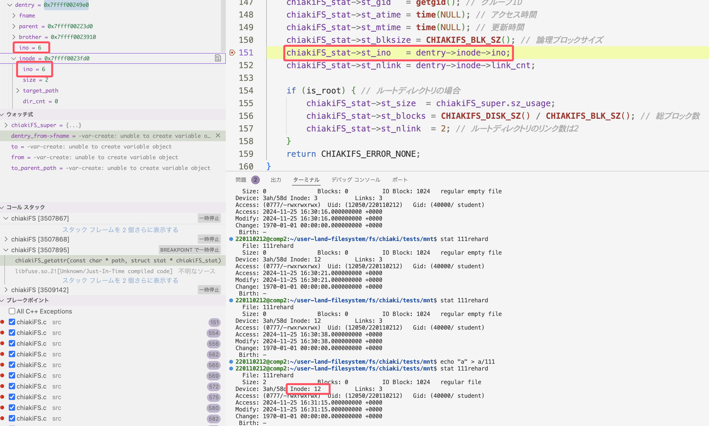
这一点对基础功能影响不大，但如果你后面要做链接功能，就需要注意。
有些同学会发现：明明在 getattr 里给 st_ino 赋值了，但 stat 看到的结果和自己预期的不一样。这通常和 FUSE 对 st_ino 的默认处理方式有关。
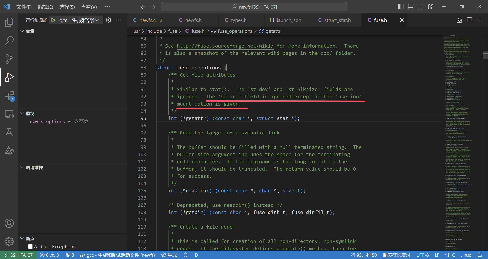
如果你希望 stat 直接显示文件系统分配的 inode 号，需要再调整 launch.json 中的挂载参数。
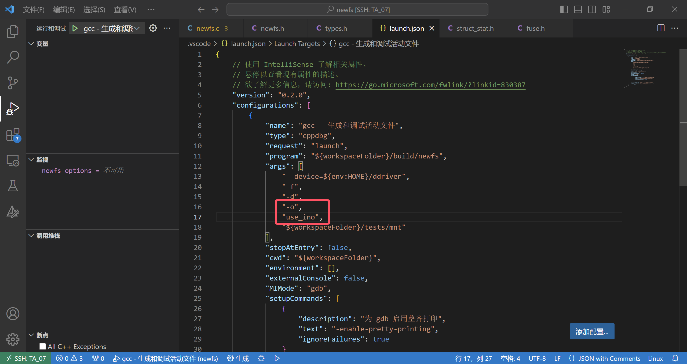
11. 挂载时 ddriver_open 的设备路径不一致¶
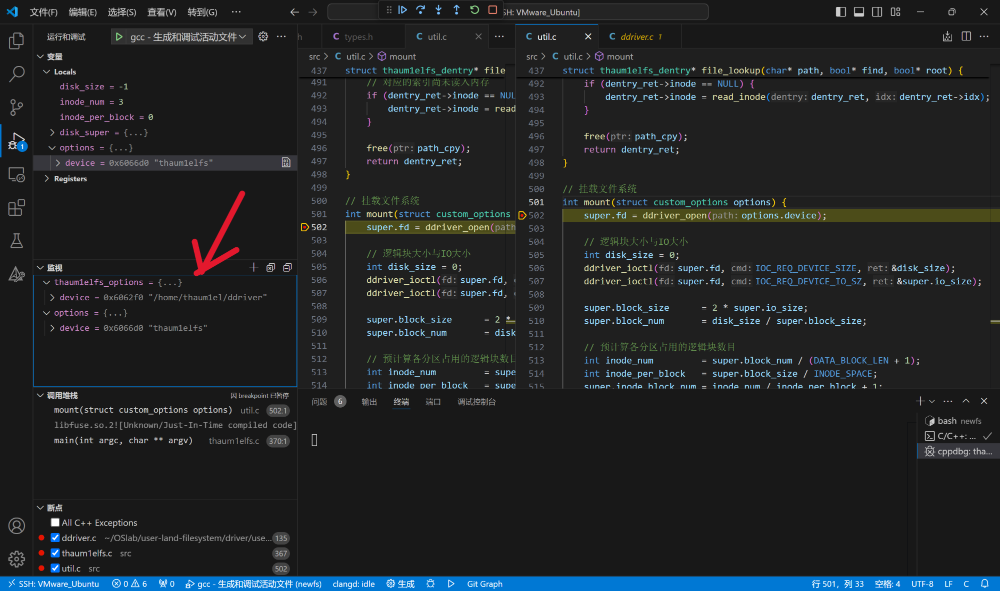
如果调试时发现根本没有按预期进入初始化流程，一个可能的原因是：
- 传给
ddriver_open()的路径不对； - 或者你的工具函数名和库函数名冲突，导致调用链异常。
如果你不是在远程平台运行，也要特别注意：--device 指定的路径必须和本机上 ddriver 文件的真实路径一致。
12. 还是定位不到问题？常用调试方法¶
如果前面的条目都对不上，问题大概率还是出在你自己的实现逻辑上。
下面这些调试方法通常最有效：
- 打印关键路径
例如先打印函数名，确认请求到底走到了哪里：
printf("### %s ###\n", __func__);
再打印位图内容、偏移、块号、inode 编号、目录项数量等关键变量，看它们是不是和预期一致。
- 断点调试
在 VSCode 中给关键钩子、lookup、位图分配函数、刷回函数打断点，单步观察变量变化。
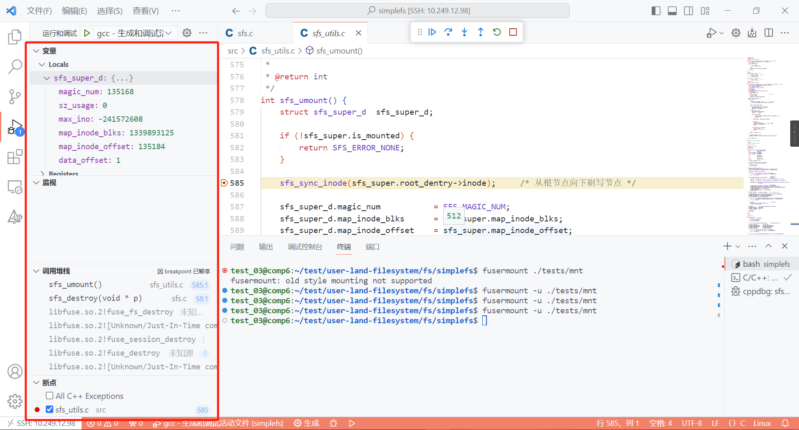
- 二分注释代码
如果你不确定是哪一段逻辑导致挂载或操作崩溃，可以暂时注释掉一部分，再逐步缩小范围。
- 查看磁盘镜像
用 ddriver -d 导出镜像，再用 Hex Editor 检查：
- 超级块字段是否正确；
- 位图是否真的更新；
inode_d和dentry_d是否写到了预期位置。
对磁盘镜像的查看方式，可参考 实验原理 2.2 磁盘管理工具。